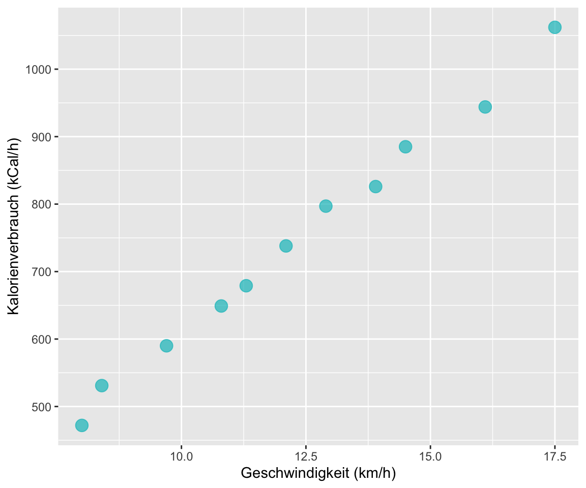
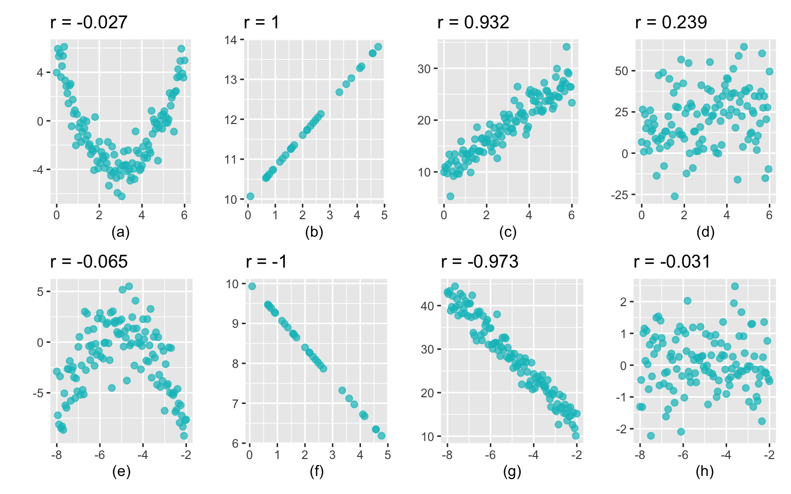
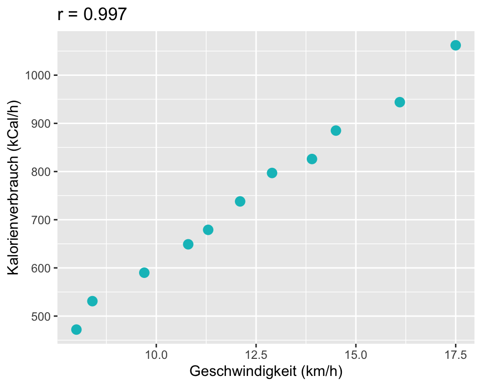
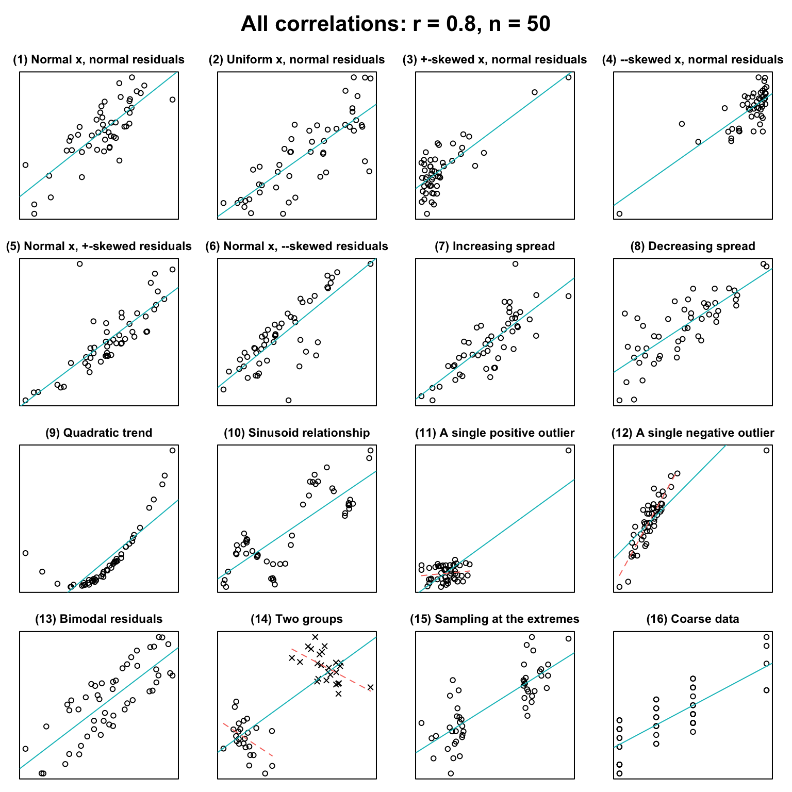
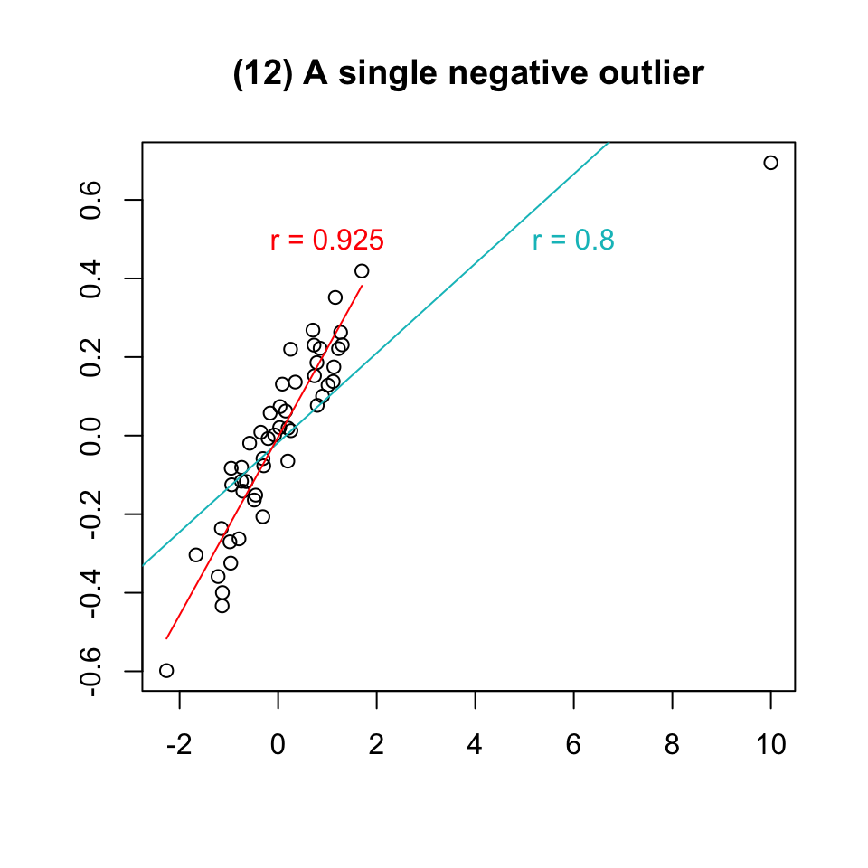
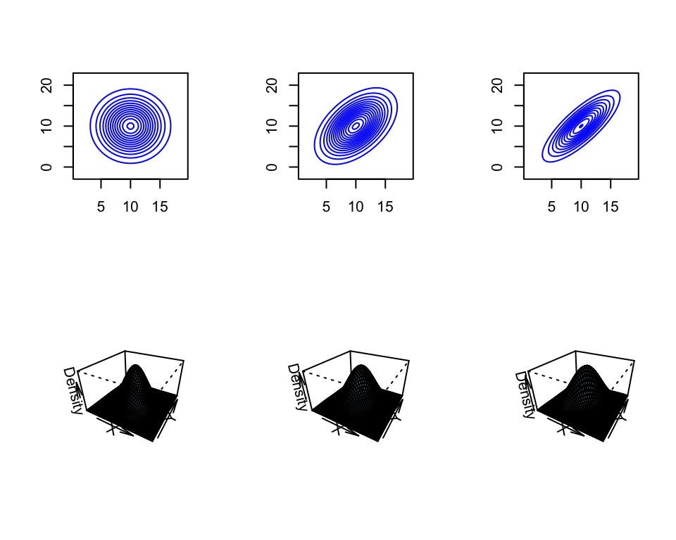
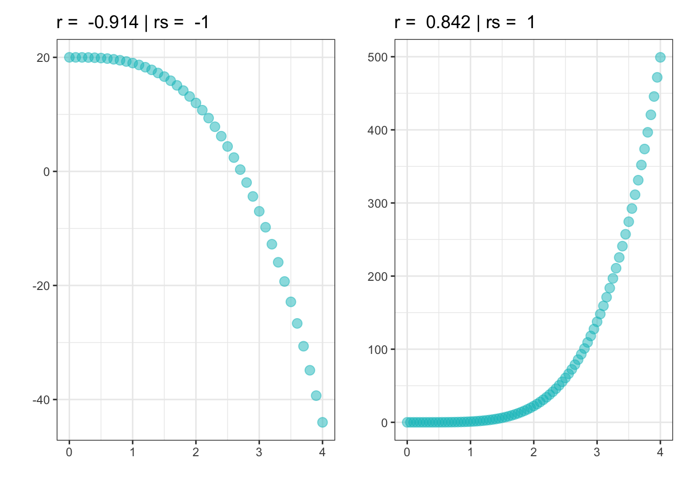
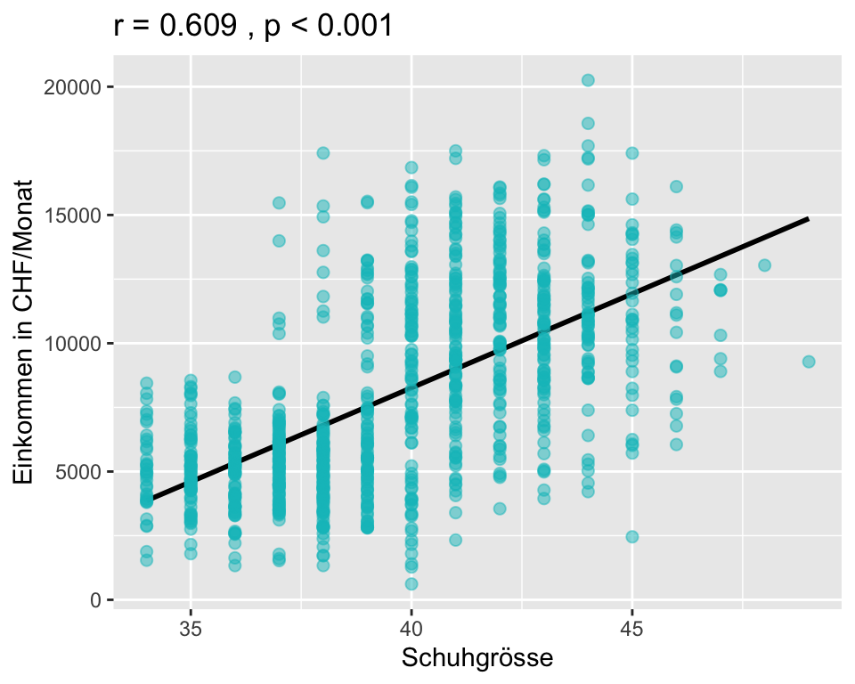
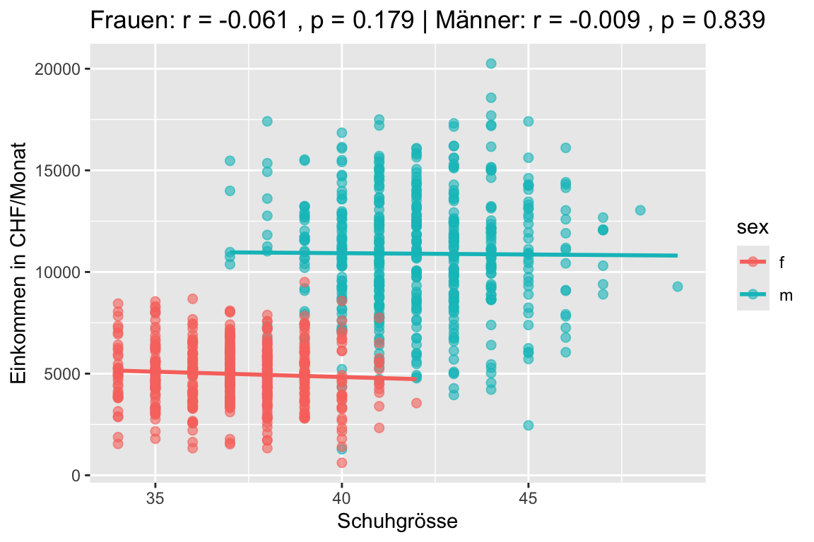

| km/h | kCal/h |
|---|---|
| 8.0 | 472 |
| 8.4 | 531 |
| 9.7 | 590 |
| 10.8 | 649 |
| 11.3 | 679 |
| 12.1 | 738 |
| 12.9 | 797 |
| 13.9 | 826 |
| 14.5 | 885 |
| 16.1 | 944 |
| 17.5 | 1062 |
5 Korrelation
5.1 Einleitung
In diesem Kapitel beschäftigen wir uns mit Zusammenhängen zwischen Variablen. Beispiele für Zusammenhänge von Variablen aus dem Alltag sind:
- Je länger jemand joggt, desto grösser ist sein Kalorienverbrauch.
- Je weniger Geld ich für die Werbung für meine Firma ausgebe, desto weniger Kunden habe ich.
- Je höher die Aussentemperatur ist, desto mehr Eis verkaufen die Eisstände.
- Je öfter es regnet, desto teurer werden die Regenschirmpreise.
- Je mehr Zeit jemand ins Krafttraining investiert, desto stärker wird er.
- Je schneller ein Zug fährt, desto kürzer wird die Reisezeit.
- Je länger der Winter dauert, desto höher werden die Heizkosten.
Den Zusammenhang zwischen zwei Variablen bezeichnen wir als Korrelation. Wenn man die Beziehung zwischen zwei Variablen kennt, können wir den Wert der einen Variablen verwenden um den Wert der anderen Variablen vorherzusagen.
5.2 Lernziele
Important
- Beschreibe die Eigenschaften des Zusammenhangs von zwei Variablen mit folgenden Begriffen
- Richtung: Ein positiver Zusammenhang besteht dann, wenn sich bei einer Erhöhung von \(X\) auch \(Y\) erhöht; wenn sich bei einer Erniedrigung von \(X\) der Wert von \(Y\) erhöht, sprechen wir von einem negativen Zusammenhang.
- Form: Ein Zusammenhang ist linear oder nicht-linear
- Stärke: Ein Zusammenhang ist stark, wenn die Streuung der Daten um die zugrundeliegende Beziehung gering ist und schwach, wenn die Streuung der Daten gross ist.
- Definiere eine Korrelation nach Pearson \(\rho\) (bzw. \(r\) für den empirischen Wert) als lineare Beziehung zwischen zwei quantitativen Variablen.
- Definiere eine Rangkorrelation nach Spearman \(\rho_s\) (bzw. \(r_s\) für den empirischen Wert) als monotone Beziehung zwischen zwei quantitativen oder qualitativ-ordinalen Variablen.
- Beachte, dass der Korrelationskoeffizient folgende Eigenschaften aufweist:
- der (absolute) Wert des Korrelationskoeffizienten \(r\) misst die Stärke der linearen Beziehung zwischen zwei quantitativen Variablen.
- das Vorzeichen (+ oder -) des Korrelationskoeffizienten \(r\) oder \(r_s\) beschreibt die Richtung des Zusammenhangs.
- der Korrelationskoeffizient \(r\) (oder \(r_s\)) liegt immer zwischen -1 und 1. -1 bedeutet perfekter negativer (linearer) Zusammenhang, + 1 bedeutet perfekter positiver (linearer) Zusammenhang und 0 bedeutet kein (linearer) Zusammenhang.
- der Korrelationskoeffizient \(r\) oder \(r_s\) ist dimensionslos.
- der Korrelationskoeffizient \(r\) oder \(r_s\) von \(X\) mit \(Y\) ist derselbe wie von \(Y\) mit \(X\).
- der Korrelationskoeffizient nach Pearson \(r\) ist empfindlich für Ausreisser.
- der Rangkorrelationskoeffizient nach Spearman \(r_s\) ist robust gegen Ausreisser.
- Korrelation bedeutet nicht, dass ein ursächlicher Zusammenhang besteht! Correlation does not imply causation!
- Berechne den Korrelationskoeffizient \(r\) oder \(r_s\) sowie die dazugehörigen inferenzstatistischen Werte (P-Wert, Konfidenzintervalle) mit
Rund interpretiere die Ouputs korrekt. - Erstelle Streudiagramme in
R.
5.3 Korrelation
Eine Korrelation beschreibt eine Beziehung zwischen zwei oder mehreren quantitativen Merkmalen (Variablen). Dabei muss diese Beziehung nicht kausal sein, d.h. die Variablen müssen sich nicht gegenseitig beeinflussen und der Zusammenhang kann völlig zufällig sein.
Beispiel: Gibt es einen Zusammenhang zwischen der Laufgeschwindigkeit und dem Kalorienverbrauch pro Stunde? Wir verwenden die Stichprobendaten von \(n\) = 11 durchschnittlich 59 kg schweren Läuferinnen.
Der Tabelle 5.1 entnehmen wir, dass mit zunehmender Laufgeschwindigkeit auch der Kalorienverbrauch zunimmt. Zusammenhänge zwischen zwei quantitativen Variablen können gut mit Hilfe eines Streudiagramms (engl. scatterplot) visualisiert werden.

Jeder Punkt in Abbildung 5.1 repräsentiert eine Kombination von Geschwindigkeit (x-Achse) und Kalorienverbrauch (y-Achse). Wenn wir die Punkte visuell miteinander verbinden, entsteht eine - nicht ganz perfekte - Gerade. In diesem Fall sprechen wir von einem linearen Zusammenhang.
5.3.1 Eigenschaften von Zusammenhängen
Die folgenden acht Punktdiagramme zeigen verschiedene Zusammenhänge zwischen der \(X\)- und der \(Y\)-Variablen.

Interpretation:
- Starker nicht-linearer Zusammenhang zwischen \(X\) und \(Y\).
- Perfekter positiver linearer Zusammenhang zwischen \(X\) und \(Y\).
- Starker positiver linearer Zusammenhang zwischen \(X\) und \(Y\):
- Wenn \(X\) grösser wird, wird auch \(Y\) grösser: positiver Zusammenhang.
- Die Punkte liegen etwa parallel zu einer gedachten Geraden: linearer Zusammenhang.
- Die Punkte streuen wenig um eine gedachte Linie: starker Zusammenhang.
- Schwacher positiver linearer Zusammenhang, die Punkte streuen stark.
- Moderater Zusammenhang zwischen \(X\) und \(Y\), der Zusammenhang ist nicht-linear.
- Perfekter negativer linearer Zusammenhang.
- Starker negativer linearer Zusammenhang:
- Wenn \(X\) grösser wird, wird \(Y\) kleiner: negativer Zusammenhang
- Die Punkte liegen nahe bei einer gedachten Gerade: starker linearer Zusammenhang.
- Kein Zusammenhang zwischen \(X\) und \(Y\).
5.3.2 Pearson-Korrelationskoeffizient \(\rho\)
Der Korrelationskoeffizient nach Pearson \(\rho\) ist ein Mass dafür, wie stark der lineare Zusammenhang zwischen zwei Variablen ist. Stehen zwei Variablen miteinander in Zusammenhang, kann man Aussagen darüber treffen, wie sich die Werte der einen Variable verhalten, wenn die Werte der anderen Variable ansteigen oder abfallen. Wir verwenden für den wahren Pearson-Korrelationskoeffizienten (den Parameter) den griechischen Buchstaben \(\rho\) und für den empirischen Pearson-Korrelationskoeffizienten (den Schätzwert) den römischen Buchstaben \(r\).
Interpretation von \(\rho\)
- Der Korrelationskoeffizient \(\rho\) kann Werte zwischen -1 und 1 annehmen. Je näher \(\rho\) bei 1 (bzw. bei -1) liegt, desto stärker ist der Zusammenhang der Variablen. Bei \(\rho = 1\) liegen alle Punkte der Daten auf einer steigenden Geraden; entsprechend bei -1 auf einer fallenden Geraden.
- \(\rho > 0\): Ist der Korrelationskoeffizient grösser als null, liegt eine positive Korrelation vor: Je grösser die Werte der einen Variablen, desto grösser sind die Werte der anderen Variablen.
- \(\rho < 0\): Ist der Korrelationskoeffizient kleiner als null, liegt eine negative Korrelation vor: Je grösser die Werte der einen Variablen, desto kleiner sind die Werte der anderen Variablen.
- \(\rho \approx 0\): Liegt der Korrelationskoeffizient nahe 0, gibt es keinen linearen Zusammenhang zwischen den Variablen. Es ist keine Aussage darüber möglich, wie sich die Werte der einen Variablen verändern, wenn die Werte der anderen Variablen steigen oder sinken.
- Beachte, dass der Korrelationskoeffizient nach Pearson nur lineare Zusammenhänge abbildet. Es kann sein, dass die Variablen zusammenhängen, nur eben nicht linear, z.B. quadratisch oder exponentiell. Ein Korrelationskoeffizient nahe bei 0 bedeutet daher nicht, dass überhaupt kein Zusammenhang besteht. Es bedeutet nur, dass kein linearer Zusammenhang besteht.
Als Faustregel für die Beurteilung der Stärke einer Korrelation kann man sich an folgender Tabelle orientieren:
| Korrelation | Stärke | Richtung |
|---|---|---|
| -1.0 to -0.8 | stark | Negativ |
| -0.8 to -0.5 | moderat | Negativ |
| -0.5 to 0 | schwach | Negativ |
| 0 to 0.5 | schwach | Positiv |
| 0.5 to 0.8 | moderat | Positiv |
| 0.8 to 1.0 | stark | Positiv |
5.3.3 Definition
Die (theoretische) Person-Korrelation ist definiert als
\[ \rho_{X,Y}=\frac{Cov(X,Y)}{\sigma_X \sigma_Y} \]
mit der Kovarianz \[ Cov(X,Y)=E((X-E(X))(Y-E(Y))) \] als dem Erwartungswert des Produkts der Abweichungen von \(X\) und \(Y\) von ihren jeweiligen Mittelwerten. Die Kovarianz wird dann geteilt durch das Produkt der beiden Standardabweichungen von \(X\) und \(Y\).
Die Korrelation ist also eine standardisierte Kovarianz. Eine Kovarianz von \(X\) mit sich selber ist \(Cov(X,X)=E((X-E(X))^2)\). Das ist ein mittlerer quadrierter Abstand und damit die Varianz von \(X\). Während die Varianz die Streuung einer einzelnen Zufallsvariablen beschreibt, misst die Kovarianz, wie zwei Zufallsvariablen gemeinsam vom Erwartungswert abweichen.
5.3.4 Empirischer Pearson-Korrelationskoeffizient \(r\)
Der empirische Korrelationskoeffizient nach Pearson wird berechnet nach der Formel \[ r = \frac{1}{n-1}\sum_{i=1}^n \frac{(x_i-\bar{x})(y_i-\bar{y})}{s_x s_y} \]
\((x_1, y_1), (x_2, y_2),..., (x_n, y_n)\) sind die \(n\) Datenpaare für \(x\) und \(y\) und \(s_x\) und \(s_y\) sind die empirischen Standardabweichungen von \(X\) und \(Y\).
Wir ersparen uns die Berechnung von Korrelationskoeffizienten von Hand, das übernimmt die Statistiksoftware.
Die Funktion in R für die Berechnung des Korrelationskoeffizienten ist cor().
x <- rnorm(100) # x definieren
y <- x + rnorm(100, 0, 0.5) # y definieren
plot(x, y) # Basis-Funktion für ein Scatterplot
cor(x, y) # Korrelationskoeffizient nach Pearson berechnen5.3.5 Hypothesentest für \(\rho\)
Auch für den Korrelationskoeffizienten exisitiert ein Hypothesentest. Wie bei jedem Hypothesentest wird auch hier aus Stichprobendaten auf die Population, aus der die Stichprobe stammt, geschlossen. Für den Korrelationskoeffizienten nach Pearson \(\rho\) lauten die Hypothesen:
\(H_0: \rho = 0\) Es besteht kein linearer Zusammenhang zwischen zwei Variablen.
\(H_A: \rho \neq 0\) Es besteht ein linearer Zusammenhnag zwischen zwei Variablen.
Die Funktion in R für diesen Hypothesentest ist
cor.test(x, y) # Hypothesentest für r5.3.6 Interpretation des Beispiels für Laufgeschwindigkeit und Kalorienverbrauch

Wir sehen, dass eine starke positive lineare Korrelation zwischen der Laufgeschwindigkeit und dem Kalorienverbrauch besteht. Der Korrelationskoeffizient nach Pearson \(r\) ist 0.997.
Pearson's product-moment correlation
data: running$kmh and running$kg59
t = 37.892, df = 9, p-value = 3.082e-11
alternative hypothesis: true correlation is not equal to 0
95 percent confidence interval:
0.9875851 0.9992189
sample estimates:
cor
0.9968805 Der Hypothesentest in Rergibt einen P-Wert von \(3.082 \times 10^{-11}\). Dies ist ein extrem kleiner P-Wert, der unter dem üblichen Signifikanzniveau von \(\alpha = 0.05\) liegt. Wir schliessen daraus, dass wir die Nullhypothese zugunsten der Alternativhypothese verwerfen können und dass ein statistisch signifikanter Zusammenhang zwischen Laufgeschwindigkeit und Kalorienverbrauch besteht.
Die Stichprobendaten liefern Evidenz dafür, dass ein nahezu perfekter positiver linearer Zusammenhang zwischen Laufgeschwindigkeit und Kalorienverbrauch in der Population (59kg schwere Frauen) besteht, \(\hat{\rho}\) = 0.997 [0.988; 0.999], p < 0.001.
5.3.7 Datenmuster und \(r\)
Korrelationskoeffizienten sind unter Forscher:innen beliebt, weil sie den Zusammenhang zwischen zwei Variablen in einer einzigen Zahl zusammenfassen. Allerdings kann ein bestimmter Korrelationskoeffizient eine Vielzahl von Mustern zwischen zwei Variablen repräsentieren und ohne zusätzliche Information - idealerweise in Form eines Streudiagramms - wissen weder die Forscher:innen noch die Leser:innen, um welche Art von Zusammenhang es sich handelt.
Die folgenden 16 Streudiagramme zeigen, was sich alles hinter einem Korrelationskoeffizienten von \(r = 0.8\) (n = 50) verbergen kann (Vanhove 2016).

Ohne im einzelnen auf die Streudiagramme in Abbildung 5.4 einzugehen, ist leicht zu erkennen, dass ganz unterschiedliche Muster des Zusammenhangs zwischen zwei Variablen mit dem gleichen Korrelationskoeffizienten \(r\) vorhanden sein können.
Betrachten wir das Beispiel 12 aus der Abbildung 5.4 etwas genauer:

Wir sehen links zwischen \(x = -2.3\) und \(x = 1.8\) eine Punktewolke, die einen starken positiven linearen Zusammenhang zwischen \(X\) und \(Y\) zeigt. Bei \(x = 10, y = 0.62\) befindet sich ein Ausreisser. Der Korrelationskoeffizient für alle Daten beträgt \(r = 0.8\). Wenn wir den Ausreisser entfernen, erhöht sich der Korrelationskoeffizient auf \(r = 0.925\), was vermutlich eher dem wahren Zusammenhang zwischen den Variablen entspricht. Unsere Schlussfolgerung: Der Korrelationskoeffizient nach Pearson \(r\) ist empfindlich für Extremwerte!
5.3.8 Annahmen bei Inferenz*
Wenn die empirische Korrelation \(\hat{\rho}\) als Schätzer für \(\rho\) verwendet wird, müssen \(X\) und \(Y\) gemeinsam normalverteilt sein. Diese Verteilung hat zusätzlich zu \(\mu_x,\mu_y,\sigma^2_x\) und \(\sigma^2_y\) noch einen weiteren Parameter \(\rho\) (eine Zahl zwischen -1 und 1), der gerade die lineare Korrelation darstellt.
Dichten von bivariaten Normalverteilungen sind in folgender Abbildung dargestellt für \(\rho=0, \rho=0.5\) und \(\rho=0.8\):

5.3.9 Rangkorrelationskoeffizient nach Spearman
Der Rangkorrelationskoeffizient nach Spearman ist ähnlich wie der Korrelationskoeffizient nach Pearson eine Methode, um Zusammenhänge zwischen Variablen zu quantifizieren. Häufig wird für den theoretischen Rangkorrelationskoeffizient nach Spearman auch die Notation \(\rho_s\) verwendet, für die empirische Korrelation verwenden wir \(r_s\). Beim Rangkorrelationskoeffizient nach Spearman handelt es sich um ein nicht-parametrisches Verfahren, bei dem die Korrelation anhand zuvor vergebener Ränge berechnet wird. Der Vorteil des Rangkorrelationskoeffizienten nach Spearman ist, dass er robust gegen Ausreisser ist und - in gewissem Umfang - auch nicht-lineare Zusammenhänge beschreiben kann. Die Interpretation von \(r_s\) ist genau gleich, wie für \(r\).
Der Rangkorrelationskoeffizient nach Spearman quantifiziert den monotonen Zusammenhang der Variablen und nicht den linearen Zusammenhang. Monotoner Zusammenhang bedeutet, wenn \(X\) steigt, steigt \(Y\) in der Tendenz auch bzw. wenn \(X\) steigt, sinkt \(Y\) in der Tendenz.

Die Funktion in R für die Berechnung von \(r_s\) am Beispiel des rechten Scatterplots in Abbildung 5.6.
cor(x, y, method = "spearman") # Rangkorrelationskoeffizient nach Spearman
cor(x, y, method = "pearson") # Korrelationskoeffizient nach PearsonDie Berechnung von \(r_s\) für das Beispiel 12 in Abbildung 5.4 (alle Daten inkl. Ausreisser) ergibt \(r_s = 0.938\). Der Wert von \(r_s\) liegt nahe am Wert für \(r = 0.925\) für die Daten ohne den Ausreisser.
5.3.10 Scheinkorrelationen
Das folgende Beispiel soll zeigen, dass bei der Interpretation von Korrelationen Vorsicht geboten ist.
Frage: Besteht ein Zusammenhang zwischen der Schuhgrösse und dem Einkommen?
Wir überprüfen diese Frage anhand der Angaben einer Stichprobe von \(n\) = 1000. Die Proband:innen wurden nach ihrer Schuhgrösse (nur ganze Grössen) und ihrem monatlichen Bruttoeinkommen befragt (Burak 2016).

Die Analyse ergibt einen moderaten positiven linearen Zusammenhang zwischen der Schuhgrösse und dem monatlichen Einkommen; mit zunehmender Schuhgrösse nimmt auch das monatliche Bruttoeinkommen zu (\(r\) = 0.609, p < 0.001).
Aber ist diese Schlussfolgerung auch korrekt oder haben wir etwas übersehen?
Die Analyse der Daten nach Geschlecht getrennt ergibt folgendes Resultat:

Wenn wir die Daten nach Geschlecht getrennt analysieren, verschwindet der Effekt vollständig. Wir haben keine Evidenz mehr dafür, dass ein Zusammenhang zwischen Schuhgrösse und Einkommen besteht (Frauen \(r\) = -0.061, p = 0.179; Männer \(r\) = -0.009, p = 0.839).
Wie können wir dieses Ergebnis interpretieren? Männer haben typischerweise eine grössere Schuhgrösse als Frauen. Zudem haben Männer im Durchschnitt - nach wie vor - ein höheres Einkommen als Frauen. Es ist demnach das Geschlecht, das einen Einfluss auf das Einkommen hat, denn wir wissen intuitiv, dass die Schuhgrösse definitiv nichts mit dem Einkommen zu tun haben kann. In diesem Fall sprechen wir von einer Scheinkorrelation, die einen Zusammenhang feststellt, wo - zumindest kausal - keiner vorhanden ist. Das Geschlecht ist im vorliegenden Fall ein Störfaktor (engl. confounder), der sowohl das Einkommen als auch die Schuhgrösse bestimmt.
Unter Confounding versteht man eine systematische Verzerrung, hervorgerufen durch einen oder mehrere Störfaktoren, die mit beiden Variablen zusammenhängen und bei der Untersuchung nicht berücksichtigt werden.
Weitere Beispiele für Scheinkorrelationen findet man in diesem Video unter diesem Link.
5.4 Zusammenfassung
- Pearson’s Korrelationskoeffizient ist für viele Dinge nützlich, hat aber den Nachteil, dass er nur die Stärke einer linearen Korrelation zwischen zwei Variablen messen kann. Mit anderen Worten misst er, in welchem Mass die Daten auf eine perfekte gerade Linie fallen. Er ist empfindlich gegenüber Ausreissern.
- Für Variablen, deren Zusammenhang nicht linear ist (was man am besten an einem Streudiagramm beurteilt), eignet sich der Rangkorrelationskoeffizient nach Spearman besser. Er ist in der Lage, nicht-lineare Zusammenhänge zu messen und er ist robust gegen Ausreisser.
- Aus den 16 Grafiken in Abbildung Abbildung 5.4 haben wir gelernt, dass ein Zusammenhang zwischen zwei Variablen immer zuerst visuell am Streudiagramm und erst in zweiter Linie anhand des Korrelationskoeffizienten beurteilt werden muss!
5.5 Anhang: hilfreiche R Codes für Korrelationen
Pearsons’s Korrelationskoeffizient
# Simulierte Daten
x <- c(-2, -1.5, -.5, 0, 1, 3, 4)
y <- c(5, 4.5, 6, 5.5, 6, 6.5, 7.5)
# Streudiagramm erstellen
plot(x, y)
# Pearson's Korrelationskoeffizient
cor(x, y)
# Hypothesentest für Pearson's Korrelationskoeffizient
cor.test(x, y)Rangkorrelationskoeffizient nach Spearman
# Simulierte Daten
x <- c(-2, -1.5, -.5, 0, 1, 3, 4)
y <- c(5, 4.5, 6, 5.5, 6, 6.5, 7.5)
# Streudiagramm erstellen
plot(x, y)
# Rangkorrelationskoeffizient nach Spearman
cor(x, y, method = "spearman")
# Hypothesentest für Rangkorrelationskoeffizienten nach Spearman
cor.test(x, y, method = "spearman")